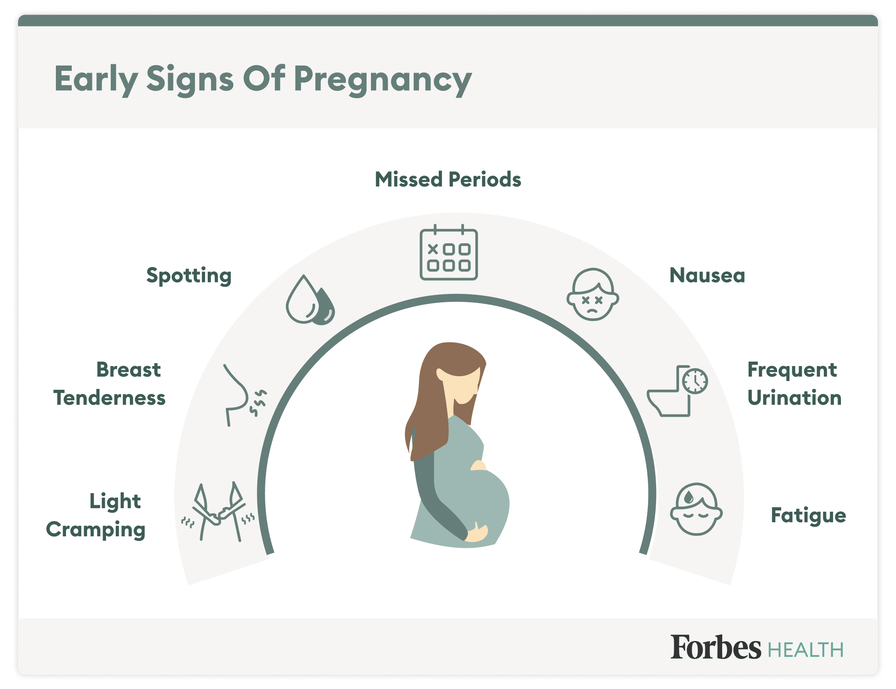
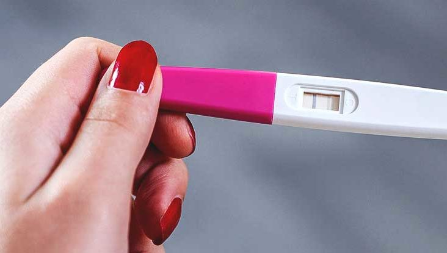

Pregnancy Period
Pregnancy is the time during which one or more offspring develops (gestates) inside a woman's womb.A multiple pregnancy involves more than one offspring, such as with twins. Pregnancy usually occurs by sexual intercourse, but can also occur through assisted reproductive technology procedures.A pregnancy may end in a live birth, a spontaneous miscarriage (spontaneous abortion), an induced abortion (induced miscarriage), or a stillbirth. Childbirth typically occurs around 40 weeks from the start of the last menstrual period (LMP), a span known as the gestational age. This is just over nine months. Counting by fertilization age, the length is about 38 weeks. Pregnancy is "the presence of an implanted human embryo or fetus in the uterus"; implantation occurs on average 8–9 days after fertilization. An embryo is the term for the developing offspring during the first seven weeks following implantation (i.e. ten weeks' gestational age), after which the term fetus is used until birth. Signs and symptoms of early pregnancy may include missed periods, tender breasts, morning sickness (nausea and vomiting), hunger, and frequent urination. Pregnancy may be confirmed with a pregnancy test. Methods of birth control—or, more accurately, contraception—are used to avoid pregnancy.
Pregnancy is divided into three trimesters of approximately three months each. The first trimester includes conception, which is when the sperm fertilizes the egg.
Around the middle of the second trimester, movement of the fetus may be felt.
Development of Embryo and Fetal

Could you be pregnant? The proof is in the pregnancy test. But even before you miss a period, you might suspect — or hope — that you're pregnant. Know the first signs and symptoms of pregnancy and why they occur.
Classic signs and symptoms of pregnancy
The most common early signs and symptoms of pregnancy might include:
-
Missed Period:
If you're in your childbearing years and a week or more has passed without the start of an expected menstrual cycle, you might be pregnant. However, this symptom can be misleading if you have an irregular menstrual cycle.
-
Tender, swollen breasts:
Early in pregnancy hormonal changes might make your breasts sensitive and sore. The discomfort will likely decrease after a few weeks as your body adjusts to hormonal changes.
-
Nausea with or without vomiting:
Morning sickness, which can occur at any time of the day or night, often begins one to two months after you become pregnant. However, some women feel nausea earlier and some never experience it. While the cause of nausea during pregnancy isn't clear, pregnancy hormones likely play a role.
-
Increased urination:
You might find yourself urinating more often than usual. The amount of blood in your body increases during pregnancy, causing your kidneys to process extra fluid that ends up in your bladder.
-
Fatigue:
Fatigue also ranks high among early symptoms of pregnancy. No one knows for certain what causes sleepiness during the first trimester of pregnancy. However, a rapid rise in the levels of the hormone progesterone during early pregnancy might contribute to fatigue.
Other signs and symptoms of pregnancy
Other less obvious signs and symptoms of pregnancy that you might experience during the first trimester include:
-
Moodiness:
The flood of hormones in your body in early pregnancy can make you unusually emotional and weepy. Mood swings also are common.
-
Bloating:
Hormonal changes during early pregnancy can cause you to feel bloated, similar to how you might feel at the start of a menstrual period.
-
Light Spotting:
Light spotting might be one of the first signs of pregnancy. Known as implantation bleeding, it happens when the fertilized egg attaches to the lining of the uterus — about 10 to 14 days after conception. Implantation bleeding occurs around the time you would expect to have a menstrual period. However, not all women have it.
-
Cramping:
Some women experience mild uterine cramping early in pregnancy.
-
Constipation:
Hormonal changes cause your digestive system to slow down, which can lead to constipation.
-
Food Aversions:
When you're pregnant, you might become more sensitive to certain odors and your sense of taste might change. Like most other symptoms of pregnancy, these food preferences can be chalked up to hormonal changes.
-
Nasal Congestion:
Increasing hormone levels and blood production can cause the mucous membranes in your nose to swell, dry out and bleed easily. This might cause you to have a stuffy or runny nose.

Are you really pregnant?
Many of these signs and symptoms aren't unique to pregnancy. Some can indicate that you're getting sick or that your period is about to start. Likewise, you can be pregnant without experiencing many of these symptoms.
Still, if you miss a period and notice some of the above signs or symptoms, take a home pregnancy test or see your health care provider. If your home pregnancy test is positive, make an appointment with your health care provider. The sooner your pregnancy is confirmed, the sooner you can begin prenatal care.
If you're planning to conceive or just learned you're pregnant, start taking a daily prenatal vitamin. Prenatal vitamins typically contain important vitamins and minerals, such as folic acid and iron, to support your baby's growth and development.